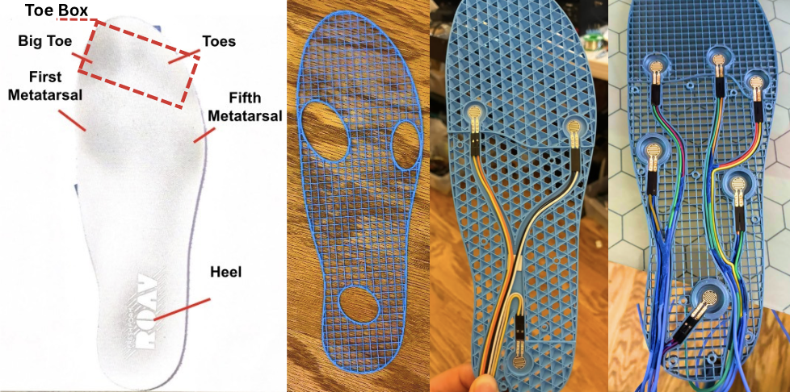
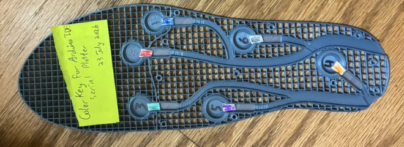
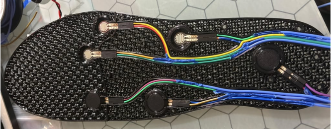
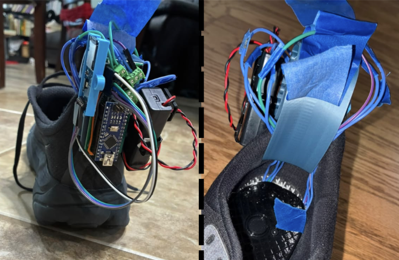
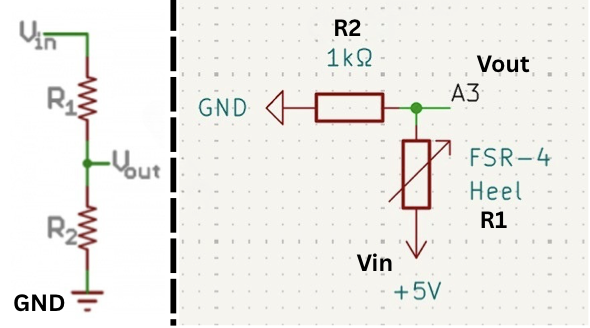
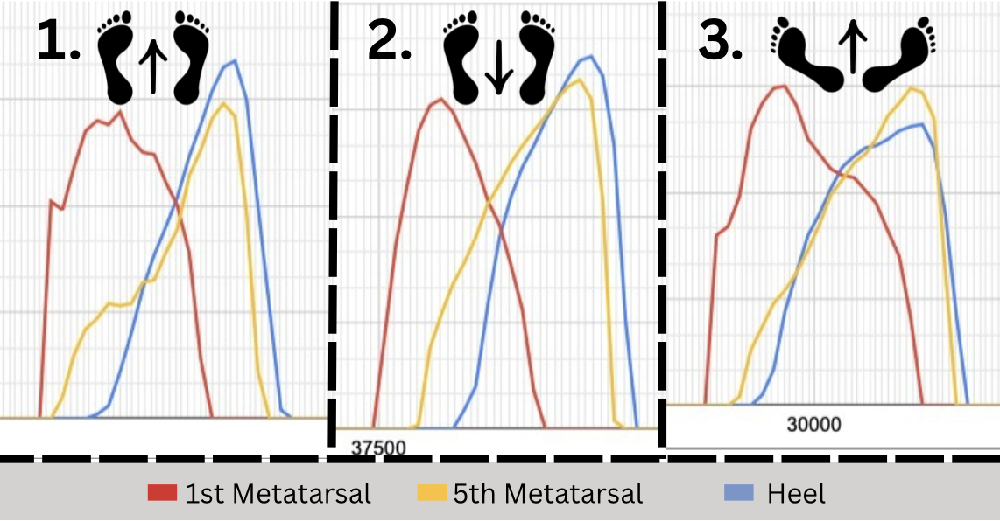

Underfoot - A Smart Insole

Introduction
Underfoot is a custom pressure-sensing insole designed to study how the foot interacts with the ground during walking. Inspired by my experiences with recurring shin splints as a cross-country runner, I wanted to develop a compact, removable system that could record plantar pressure without significantly altering the shoe's normal feel. The project combines a 3D-printed insole, pressure sensors, and a small microcontroller to investigate gait patterns.
Hardware Basics
The insole uses six DF9-16 force-sensitive resistors (FSRs) distributed across the heel, arches, and metatarsal region. Each sensor changes resistance as pressure is applied, allowing the system to measure how force is distributed across the foot. The sensors connect to an Arduino Nano, which reads their analog voltage signals through its 10-bit analog-to-digital converter.
To make the system wearable, the insole and its sensor compartments were designed around a flexible 3D-printed structure. TPU 95A was selected for its flexibility, while dedicated channels guide the sensor wiring toward the electronics mounted on the shoe.

Insole Design
Sensor placement evolved through several prototypes. Initial testing used sensors beneath the heel and the first and fifth metatarsals. However, this arrangement provided limited information about differences between gait patterns. Additional locations were considered before settling on six sensors: one beneath the heel, one beneath each of the first, fourth, and fifth metatarsals, and one beneath each arch.

Each sensor sits inside a dedicated cavity with a contact puck that transfers pressure to the sensing surface. The cavities and wiring channels were incorporated directly into the printed insole, keeping the sensors secured while allowing the assembly to remain removable.


Electronics
The electronics are housed in a custom 3D-printed mount attached to the shoe. The Arduino Nano reads the six FSR signals through voltage-divider circuits, converting changes in sensor resistance into digital pressure readings. The readings are recorded to a microSD card as a CSV file, allowing the data to be transferred and analyzed later.
Because the FSRs behave as variable resistors, each sensor is connected to a voltage divider. As pressure increases, the sensor's resistance decreases, changing the voltage measured by the Arduino. This provides a simple way to convert pressure changes into electrical signals.

Reading the Foot Data
Once the electronics were working, I could finally start looking at what the insole was actually recording. Each FSR produces a changing signal as pressure is applied and released, giving me a way to visualize how different parts of the foot interact with the ground throughout a step.
The first graphs were particularly useful for understanding how pressure moves between the heel and forefoot. Each line represents a different sensor, allowing me to compare when pressure begins, reaches its peak, and disappears as the foot moves.
I also wanted to see how the signals changed during more exaggerated walking patterns. Using samples from LOG14, LOG12, and LOG13, I plotted three additional examples representing tiptoe, duckwalk, and heelwalk. These recordings were taken directly from the original CSV files without filtering, so they show the sensor readings as they were originally recorded.


These graphs provided an initial look at how different gait patterns affect the pressure signals. They also helped establish the foundation for the later data-processing and gait-classification work.
Further Documentation
For the complete methodology, circuit details, and gait classification research, see the research paper .